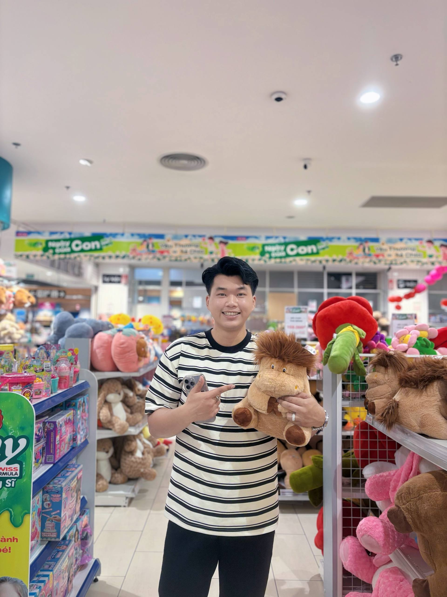
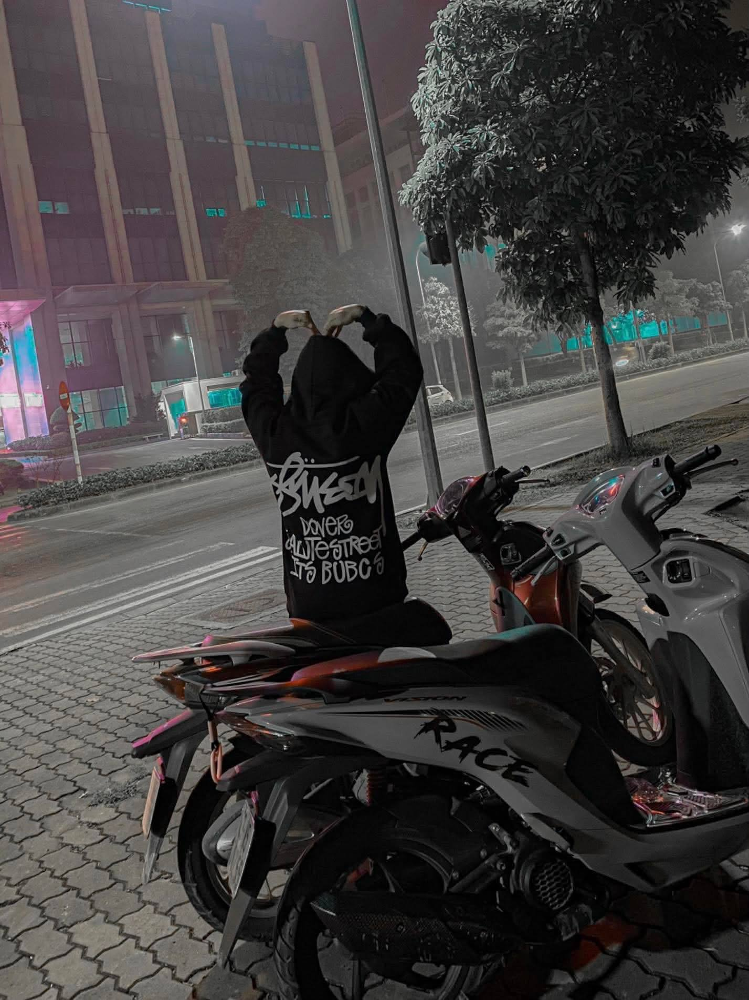
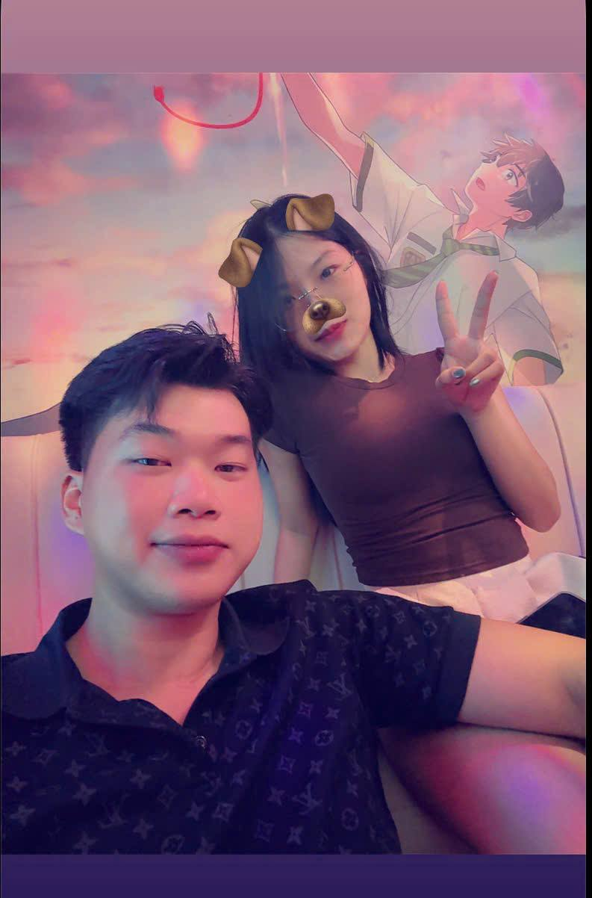
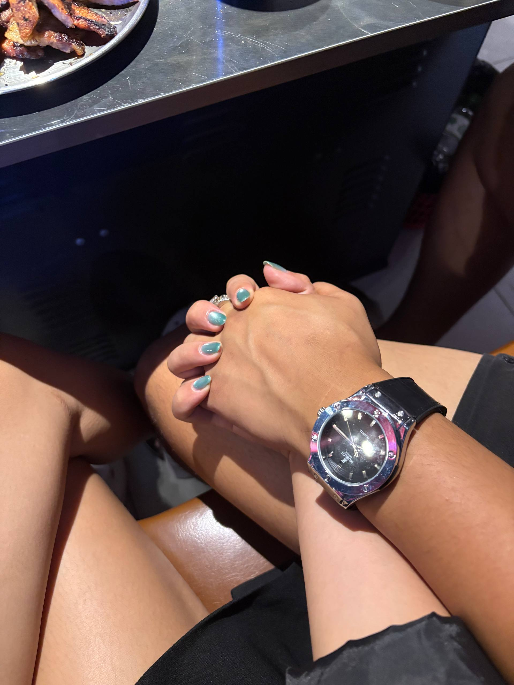
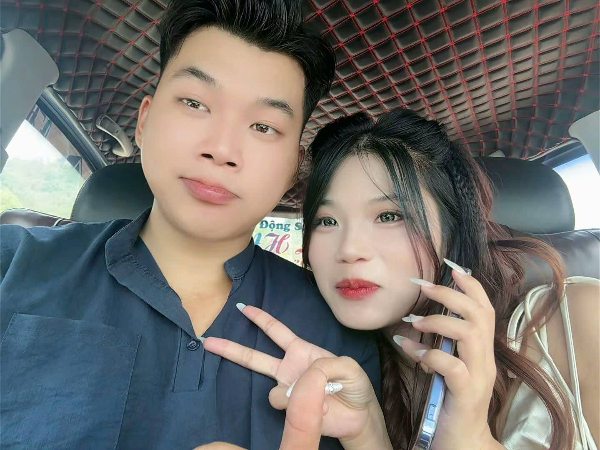
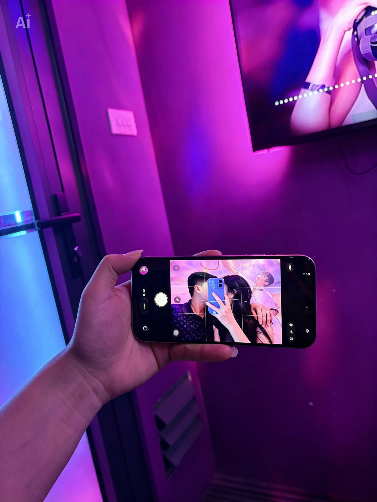

Khoảnh Khắc Đầu Tiên
Ngày hôm ấy tưởng chừng chỉ là một ngày bình thường, nhưng lại trở thành ngày đặc biệt nhất với em. Sau 7 năm quen biết, từng là "chị em", chúng ta lại gặp lại và bắt đầu một câu chuyện mới. Cảm ơn anh vì đã xuất hiện, quan tâm và cùng em viết tiếp hành trình này. ❤️

Một Buổi Hẹn Đáng Nhớ
Là buổi hẹn đầu tiên sau 7 năm quen biết, chúng ta cùng nhau trò chuyện, cười đùa như như những người bạn cũ. Em từng nghĩ hôm ấy chỉ là một buổi đi chơi bình thường, nhưng không ngờ đó lại là khởi đầu để anh và em trở nên đặc biệt hơn trong cuộc đời của nhau. ❤️

Những Kỷ Niệm Đẹp
Chúng ta cùng đi, cùng cười, cùng lưu lại những bức ảnh thật đẹp. Mỗi bức ảnh đều chứa đựng một phần ký ức không thể quên.

Một Ngày Thật Đặc Biệt
Được cùng anh đón sinh nhật, cùng thổi nến, cùng ước những điều tốt đẹp nhất... Chính là món quà ý nghĩa nhất đối với em.

Cùng Nhau Khám Phá
Dù đi đâu, chỉ cần được ở cạnh anh thì nơi đó đều trở thành một kỷ niệm thật đẹp.

Hạnh Phúc Giản Đơn
Có những khoảnh khắc chẳng cần điều gì quá lớn lao, chỉ cần một nụ cười của anh cũng đủ khiến em hạnh phúc.

Mãi Bên Nhau
Cảm ơn anh vì đã luôn lắng nghe, luôn động viên và luôn là chỗ dựa bình yên nhất của em.

Chúng Ta Sẽ Còn Đi Rất Xa
Hôm nay là sinh nhật anh, nhưng đây cũng chỉ là một cột mốc nhỏ trong hành trình rất dài mà em mong sẽ luôn có anh đồng hành phía trước.